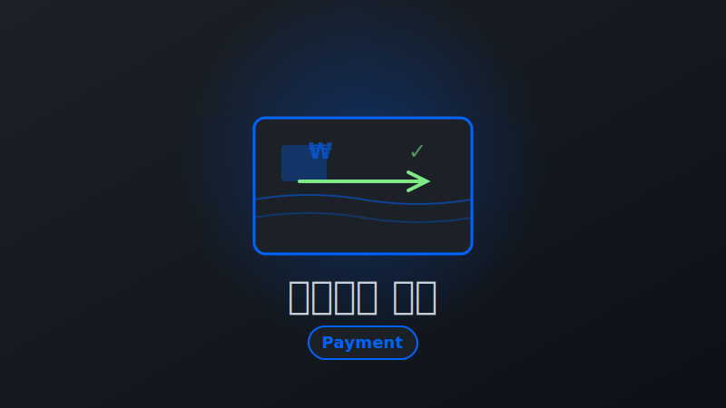

Projects

토스페이 결제 시스템 연동
View on GitHub개요
기존 이니시스(신용카드), 카카오페이(간편결제) 결제 수단에 토스페이를 추가하여 결제 옵션을 다양화하고 전체 거래액의 30%(111억 원)를 달성했습니다. ISMS-P 보안 인증 심사와 병행하며 통상 3개월 작업을 6주 만에 완료한 프로젝트입니다.
프로젝트 배경
비즈니스 요구사항:
- 결제 수단 다양화로 사용자 편의성 향상
- 토스 생태계 연동으로 신규 고객 유입
- 결제 성공률 개선 및 시장 점유율 확대
기술적 도전:
- 영향 범위 광범위: 결제, 주문, 정산, 어드민 시스템 전 영역에 걸친 변경 작업
- ISMS-P 인증 동시 진행: 보안 인증 심사와 신규 결제 수단 개발을 병행 수행 (정보보호 관리체계 인증)
- 타이트한 일정: 통상 3개월 소요되는 작업을 비즈니스 요구사항에 따라 6주 내 완료 필요
- 데이터 정합성 보장: 결제-주문-정산 전 과정의 트랜잭션 일관성 유지
해결 과제 (Task)
- 4개 시스템(결제/주문/정산/어드민)을 6주 내 동시 개발 및 배포
- ISMS-P 보안 인증 요구사항을 충족하며 신규 PG사 연동
- 결제-주문-정산 전 과정의 데이터 정합성 보장 (Saga 패턴)
- 결제 성공률 개선 및 사용자 편의성 향상
시스템 아키텍처 (Action)
graph LR
A[결제 요청] --> B{PG 라우팅}
B -->|기존| C[이니시스]
B -->|기존| D[카카오페이]
B -->|신규| E[토스페이]
E --> F[결제 승인]
F --> G[주문 생성]
G --> H[정산 데이터]
I[어드민] --> J[결제 내역]
I --> K[정산 관리]
I --> L[통계 대시보드]
주요 기능
결제 시스템:
- 토스페이 API 연동 (승인, 취소, 환불)
- 기존 결제 로직과 통합 (전략 패턴으로 PG사별 분기 처리)
- Webhook 기반 실시간 결제 상태 동기화
주문 시스템:
- 결제 수단별 주문 처리 로직 확장
- 트랜잭션 관리 강화 (데이터 정합성)
정산 시스템:
- PG사별 정산 데이터 포맷 통합
- 자동 정산 배치 작업 확장
어드민 시스템:
- 토스페이 결제 내역 조회
- 결제 수단별 통계 대시보드
- 수동 환불 처리 기능
개발 프로세스
태스크 분석 및 우선순위:
- 영향 범위 파악 (결제/주문/정산/어드민)
- 태스크 분해 및 일정 산정
- ISMS-P 요구사항 반영
병렬 개발 전략:
- 결제 API 연동 (2주)
- 주문/정산 로직 확장 (2주)
- 어드민 기능 개발 (1주)
- QA 및 버그 수정 (1주)
기술적 도전과 해결
도전 1: 짧은 일정 (3개월 → 6주)
- 문제: 결제/주문/정산/어드민 4개 영역을 모두 수정해야 하는 대규모 작업을 6주 내 완료
- 해결:
- 태스크 분해 및 우선순위:
- 전체 작업을 60개 세부 태스크로 분해
- 영향도-긴급도 매트릭스로 우선순위 결정
- P0(핵심): 결제 승인/취소/환불 API (2주)
- P1(중요): 주문·정산 로직 확장 (2주)
- P2(부가): 통계·대시보드 (2차 배포로 분리)
- 병렬 개발 전략:
- 결제 API 연동: 본인 담당 (2주)
- 주문·정산 로직: 동료 백엔드 개발자 담당 (2주)
- 어드민 UI: 프론트엔드 개발자 담당 (2주)
- 주 2회 동기화 회의로 인터페이스 정합성 유지
- 핵심 플로우 우선:
- 1단계: 결제 승인/취소/환불만 구현 후 QA
- 2단계: 주문·정산 연동
- 3단계: 어드민 기능 추가
- 각 단계마다 프로덕션 배포하여 리스크 분산
- 태스크 분해 및 우선순위:
- 효과: 3개월 예상 작업을 6주 만에 완료, ISMS-P 인증 동시 통과
도전 2: 데이터 정합성 보장 (Saga 패턴)
- 문제: 결제 승인 후 주문 생성 실패 시 고객 과금 문제 발생 가능
- 해결:
- Saga 패턴 구현: 결제 승인 실패 → 자동 환불 이벤트 발행 → 주문 상태 롤백 → SQS 재시도
- 구체적 플로우:
- 결제 승인 성공 →
payment_order_mapping테이블에 매핑 기록 - 주문 생성 실패 시 → 이벤트 발행 (
OrderFailedEvent) - 이벤트 컨슈머가 TossPay 환불 API 호출
- 환불 실패 시 SQS DLQ(Dead Letter Queue)로 전송 → 수동 처리
- 결제 승인 성공 →
- 멱등성 보장:
- TossPay Webhook 수신 시
payment_key로 중복 검증 - 동일
payment_key재수신 시 DB 업데이트 스킵 - 실패 시 SQS로 이벤트 재발행하여 재시도
- TossPay Webhook 수신 시
- 트랜잭션 매핑 테이블:
payment_order_mapping테이블로 결제-주문 1:1 매핑- UNIQUE 제약조건으로 중복 결제 원천 차단
- 검증: 결제 성공률 2.5% 향상, 결제-주문 불일치 케이스 0건 달성
도전 3: ISMS-P 인증과 병행 개발
- 문제: 보안 인증 심사 중 신규 결제 수단 추가로 인한 추가 검토 필요
- 해결:
- 개발 초기부터 ISMS-P 보안 요구사항 체크리스트 반영
- 카드번호/계좌번호 등 민감정보 마스킹 처리
- 결제 관련 모든 API 요청/응답 로깅 및 암호화
- 개인정보 처리방침 업데이트 및 법무 검토 완료
기술 스택
- NestJS, MySQL, Redis
- TossPay API, Webhook
- Docker, GitLab CI/CD
주요 성과 (Result)
- 거래액: 전체 거래액의 30% (약 111억 원) 달성
- 개발 기간: 통상 3개월 → 6주 완료 (50% 단축)
- 결제 성공률: 2.5% 향상
- 보안 인증: ISMS-P 인증 동시 통과
- 데이터 정합성: 결제-주문 불일치 케이스 0건
- 병렬 개발: 3명 개발자 동시 작업으로 생산성 2배 향상
배운 점
- 복잡한 시스템 통합 경험 (결제-주문-정산 전 영역 변경)
- 짧은 일정 내 효율적 태스크 관리 및 우선순위 결정
- 보안 인증 요구사항 대응 및 규제 준수 프로세스 이해